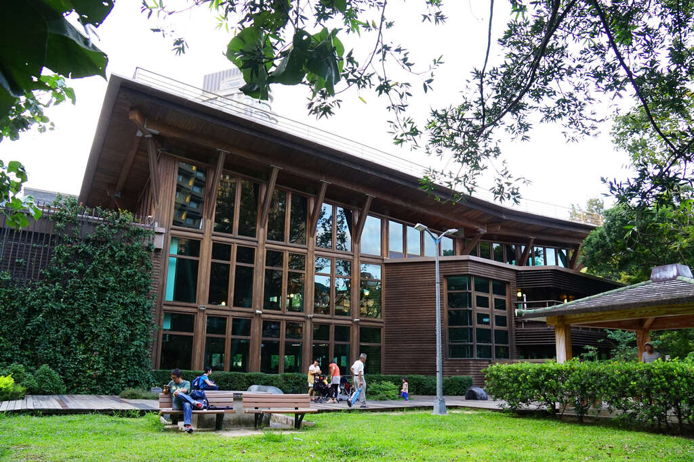

景點介紹
臺北市立圖書館北投分館是臺灣首座綠建築圖書館，座落於林木茂密、 生態環境豐富的北投公園內，與溫泉博物館比鄰，地下一層、地上二層， 總面積650坪的圖書館。本分館座落於在綠意盎然的北投公園內，室內書香，戶外鳥語，相映成趣， 閱讀成了一件愜意、享受的活動。
屋頂為輕質生態屋頂，設有太陽能光電板發電，可發電16千瓦電力， 並採大量陽台深遮陽及垂直木格柵，降低熱輻射進入室內，降低耗能達到節能效果。 綠化屋頂及斜坡草坡設計可涵養水分自然排水至雨水回收槽， 再利用回收水澆灌植栽及沖水馬桶，達到綠化與減少水資源浪費。
來到北投，除了可以泡溫泉，也可以來北投圖書館，享受書香與綠意融合的森林浴！
